Descrição
Parabéns aos vencedores do Laboratório de projetos de Séries:
Júri Oficial
Melhor Pitching
LÍDIA FERREIRA e ANNE LISE ALE
“Calendário de Letícia”
Segundo Melhor Pitching
TATIANA MARRA
“Aperte o F*#$@”
Terceiro Melhor Pitching
JOÃO BLEY, BRUNO AUGUSTO LUVIZOTTO DE CAMPOS e PEDRO PENNA BUENO
“Agora Vai”
e
Menção Honrosa
BRUNA COUTT e BRUNO SINNHOFER
“O Segredo de Agnes”
Júri Popular
Melhor Pitching
BRUNA COUTT e BRUNO SINNHOFER
O Segredo de Agnes
Parabéns aos finalistas do Laboratório de Projetos de Séries:
- AGORA VAI - João Bley, Bruno Augusto Luvizotto de Campos e Pedro Penna Bueno (São Paulo - SP)
- APERTE O F*#$@ - Tatiana Marra (São Paulo - SP)
- CALENDÁRIO DE LETÍCIA - Lídia Ferreira e Anne Lise Ale (Manaus-AM/ Curitiba - PR)
- DEIXA FALAR - Nino Ottoni e Pablo Nery French (Rio de Janeiro - RJ)
- FÁTIMA - Andréa Rodrigues (Justinópolis/Ribeirão das Neves - MG)
- HISTÉRICAS - Maria Clara Gomes Bruno (Nova Iguaçu - RJ)
- MARTINELLI - Duba (Brumado - BA)
- O BOM SELVAGEM - Thales Felipe (Porto de Pedras - AL)
- O SEGREDO DE AGNES - Bruna Coutt e Bruno Sinnhofer (São Paulo - SP)
- QUERO SER BIA - Fernanda Gama (São Paulo - SP)
Parabéns aos semifinalistas do Laboratório de Projetos de Séries:
A ASSUSTADORAMENTE INCRÍVEL HISTÓRIA DE JULIE COSTA - Clara Ballena (Salvador - BA)
AGORA VAI - João Bley, Bruno Augusto Luvizotto de Campos e Pedro Penna Bueno (São Paulo - SP)
A MESTRA - Igor Fonseca (Petrópolis - RJ)
A NOVA CALIFÓRNIA - Priscila de Souza Irmão (Guarujá - SP)
APERTE O F*#$@ - Tatiana Marra (São Paulo - SP)
CALENDÁRIO DE LETÍCIA - Lidica e Anne Lise Filartiga Ale (Curitiba - PR)
CONTRA MARÉ - Virginia (Sâo Paulo - SP)
DEIXA FALAR - Nino Ottoni e Pablo Nery French- Rio de Janeiro
EU - Tázio Silvestre (São Paulo - SP)
FATIMA - Andréa Rodrigues (Justinópolis/Ribeirão das Neves - MG)
FISSURA - Cassiano G. Zanella (Erechim - RS)
HISTÉRICAS - Maria Clara Gomes Bruno (Nova Iguaçu - RJ)
MARTINELLI - Duba (Brumado - BA)
O BOM SELVAGEM - Thales Felipe (Porto de Pedras - AL)
O SEGREDO DE AGNES - Bruna Coutt e Bruno Sinnhofes (São Paulo - SP)
OS REIS DO PEDAÇO - Cecília Bastos (BRASÍLIA - DF)
QUERO SER BIA - Fernanda Gama (São Paulo - SP)
SALAFRÁRIO - Daniel (Rio de Janeiro - RJ)
SE NÃO AGORA, QUANDO? - Bovo (Caxias do Sul - RS)
TRABALHO SEM FUTURO - Yann Lima Rodrigues (São Paulo - SP)
Governo Federal, Governo do Estado do Rio de Janeiro, Secretaria de Estado de Cultura e Economia Criativa do Rio de Janeiro, através da Lei Aldir Blanc apresentam o V ROTA – Festival de Roteiro do Audiovisual, selecionado pelo Edital de Chamada Emergencial de Premiação nº 04/2020 “FOMENTA FESTIVAL RJ”, que dispõe sobre a premiação financeira de festivais realizados no Estado do Rio de Janeiro. Com isto, a produção do ROTA tem o prazer de oferecer premiação em dinheiro, conforme o Regulamento abaixo:
Inscrições de 20 de janeiro a 03 de fevereiro de 2021
LEIA TODO O REGULAMENTO ANTES DE ENVIAR SUA INSCRIÇÃO
O Laboratório de Projetos de Séries é composto por consultorias que acontecerão nos dias 16 e 17 de março de 2021 de 9h às 18h, e de Pitching, que acontecerá no dia 21 de março de 2021. O ROTALab tem o objetivo de promover, através de premiação, bons projetos de estudantes e iniciantes contribuindo com seu desenvolvimento e apontando caminhos para a sua viabilização.
As inscrições são totalmente grátis.
O inscrito tem direito a inserir até 03 (três) projetos para concorrer a 01(uma) vaga no Laboratório de Projetos de Séries.
Para se inscrever é necessário informar os seguintes itens do projeto: Título, Gênero, Logline, Número de episódios, Tipo ou Formato, Conceito da série, Arco da/o protagonista, Universo, Personagens principais, Arco da temporada 1 e Temporadas futuras. E deverá anexar: documento com foto, sinopse do piloto; termo de responsabilidade, comprovante ou protocolo de Registro na Biblioteca Nacional ou de outra instituição como o www.registrodeobras.com; arco da/o protagonista, caso se aplique; documento que comprove a liberação dos direitos, caso se aplique e carta de autorização do(s) coautor(es), caso se aplique. As descrições dos itens estão no Regulamento.
A Curadoria selecionará 10 projetos finalistas para participar do Laboratório. Cada selecionado receberá consultorias de 4 profissionais reconhecidos, nos dias 16 e 17 de março, e apresentará o Pitching do seu projeto para o Júri Oficial do V ROTA e para o público, que elegerão o Melhor Pitching pelo Júri Oficial e pelo Júri Popular, com entrega de prêmios no dia 21 de março de 2021.
As inscrições ficam abertas de 00h00 de 20 de janeiro até as 23:59h de 03 de fevereiro de 2021.
A Seleção dos 10 finalistas que participarão do Laboratório será divulgada em 11 de março de 2021.
Dúvidas e sugestões? Envie email para rotalab2021@gmail.com.
Convidados
-
ALEXANDRE GUERREIRO
Curador
Doutor em Comunicação pelo PPGCOM/UFF, com pós-doutorado em Educação pela FE/UFRJ. Mestre em Comunicação pelo PPGCOM/UFF. Bacharel e Licenciado em História pela UERJ e Bacharel em Comunicação Social (Cinema) pela UFF. Integra os grupos de pesquisa CINEAD/LECAV: cinema para aprender e desaprender, do Laboratório de Educação, inema e Audiovisual da UFRJ, e QUADRO A QUADRO: projetando ideias, refletindo imagens, da UFRB. Atualmente, é Professor Docente I de História e Filosofia na Secretaria de Estado de Educação do Rio de Janeiro. Produtor, diretor e roteirista de obras audiovisuais. Produtor e Curador de Mostras e Festivais. Coordenou a produção da 8a e 9a edições da Mostra Cinema e Direitos Humanos e do projeto Inventar com a Diferença, realizados pela UFF, em parceria com a Secretaria de Direitos Humanos da Presidência da República e o Ministério da Cultura.
-
ANA PACHECO
Curadora
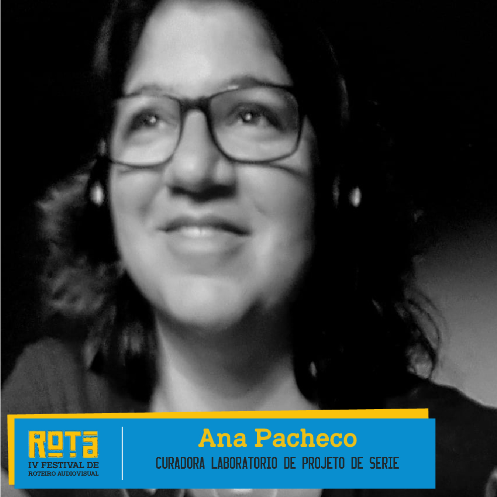 Formada em Comunicação Social com mestrado em Antropologia e especialização em roteiro, trabalha há mais de 20 anos com audiovisual e educação. Como roteirista, participou da série infantil Gaby Estrella, exibida no Canal Gloob e indicada ao Emmy Kids Awards. Criou e escreveu a série infanto juvenil Ernesto, O Exterminador de Seres Monstruosos (e outras porcarias) – uma inédita coprodução com o Uruguai, exibida na TV Brasil e na Televisión Nacional del Uruguay em 2019. Participou também do desenvolvimento da primeira temporada da série Juacas, exibida no Disney XD. Coordenou o núcleo criativo CALEIDOSCÓPIO, da 3 Tabela Filmes, onde escreveu o longa “Derrapada”, uma adaptação do livro “Slam” de Nick Hornby, em produção. Em animação, foi roteirista e scriptdoctor da segunda temporada de DINO AVENTURAS e roteirista das séries Billy e Catarina, em produção para TV COM - BA, Galalau e Corujina (ZooMoo), e Arabela e Aristóteles, parte do núcleo criativo ANIMA BAHIA. Participou da equipe de roteiristas da série de ficção dramática “A Dona da Banca”, em produção para o CinebrasilTV. Roteirista-chefe das séries dramática “Doutor Palhaço” e “Bem Vindo ao Inferno”. Faz a redação final da série Detetives do Prédio Azul, atualmente no desenvolvimento da 16a temporada. Atualmente escreve também um longa metragem musical de sua autoria.
-
BIA CRESPO
Curadora
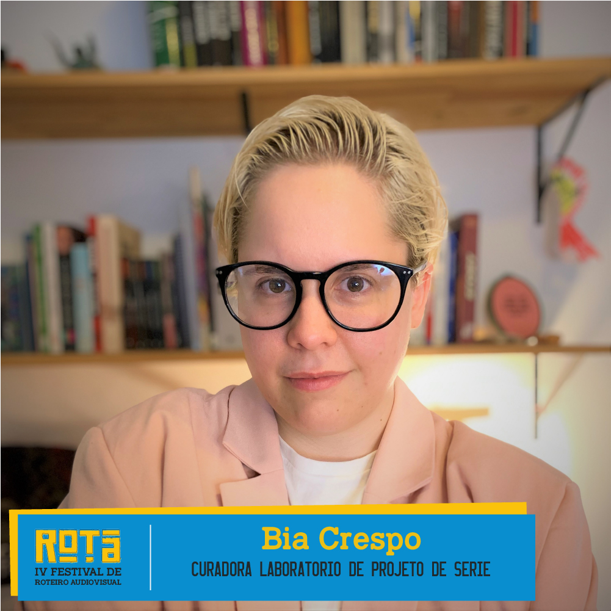 Formada em Audiovisual pela ECA-USP, se especializou em roteiro na Vancouver Film School. Foi coordenadora de conteúdo da Paris Entretenimento por dois anos, responsável por curadoria e desenvolvimento de projetos. Em 2019, foi contemplada com Melhor Pitching e 2° lugar na categoria Piloto de Série do FRAPA e Melhor Argumento Infantojuvenil no Prêmio Cabíria. Roteirizou os longas "Galeria Futuro", "10 Horas Para o Natal" e "A Sogra Perfeita", todos previstos para estrearem em 2020. Atualmente é roteirista fixa da Conspiração Filmes e sócia-fundadora da TDC Conteúdo.
-
CAROLINA AMARAL
Curadora
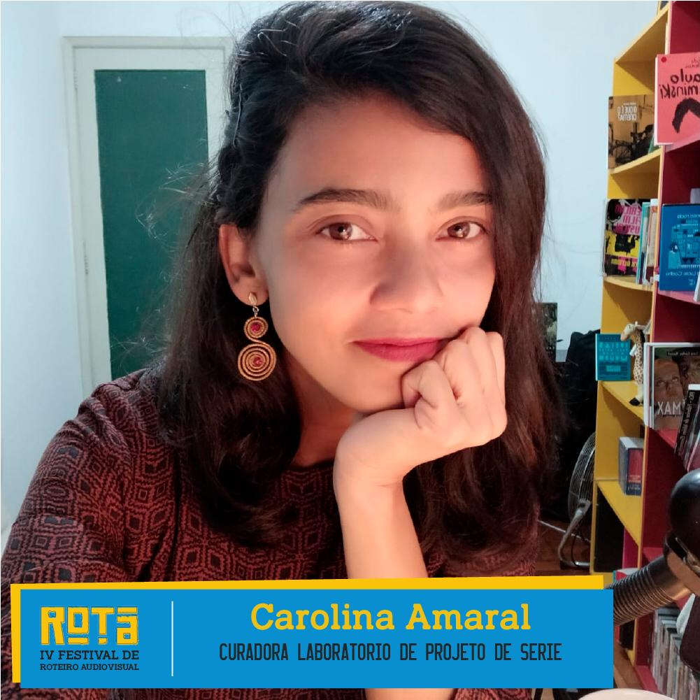 Pesquisadora e professora (FAPERJ/UFF), roteirista e produtora trabalhando com audiovisual desde 2007. Formada em Cinema (UFF), é doutora e mestre pelo PPGCOM-UFF, na linha de pesquisa "Estudos de Cinema e Audiovisual". Já trabalhou como professora na Escola de Cinema Darcy Ribeiro, na graduação em Cinema da UFF e em oficinas de roteiro para escolas públicas municipais, estaduais e federais. Suas pesquisas se concentram em gêneros audiovisuais, Estudos de narrativa e escrita audiovisual. Atualmente, é coordenadora do ST Estudos de Roteiro da SOCINE e desenvolve pelo PPGCINE-UFF a pesquisa de pós-doutorado "Conforto Narrativo: melodrama, crise e catarses de ficções seriadas televisivas", com supervisão de Mariana Baltar Freire.
-
DANIEL FRAIHA
Curador
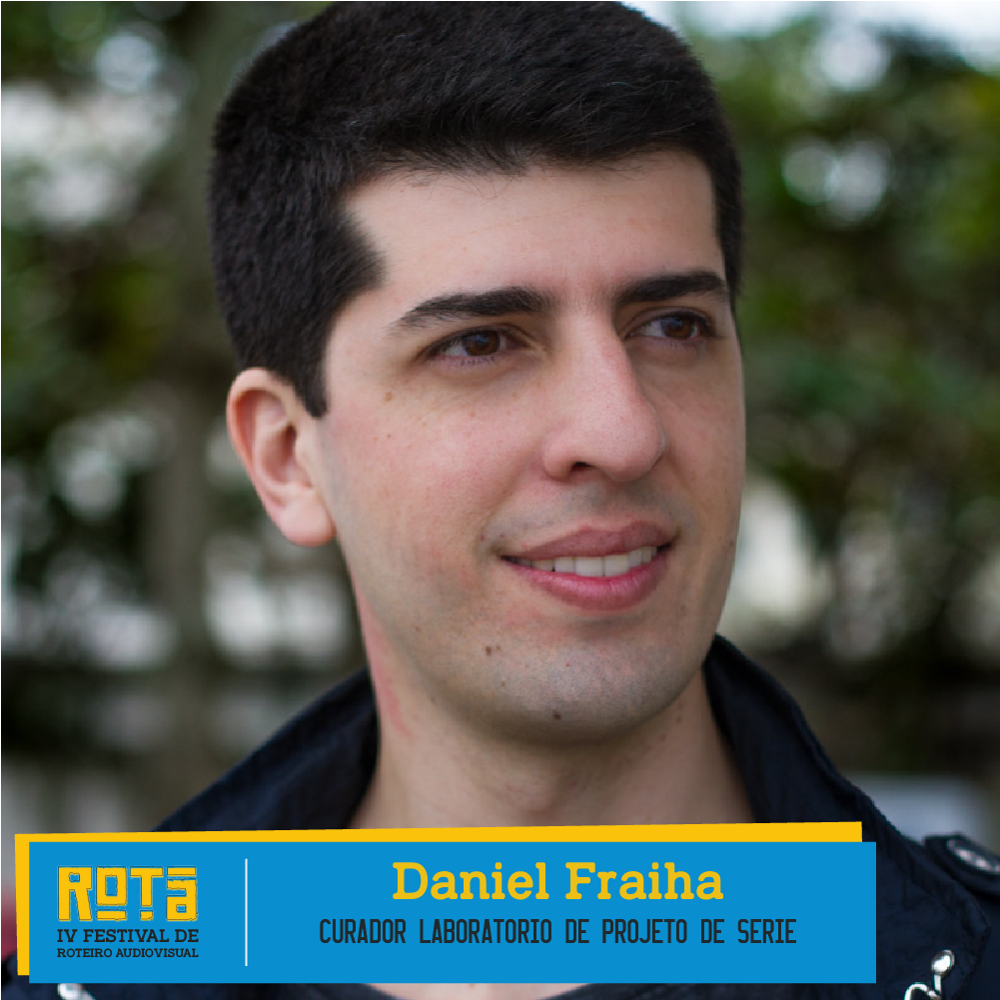 É jornalista e roteirista, sócio da Projéteis. Graduado e mestre pela UFRJ, trabalhou na série Pela Fechadura (drama/2019), do canal Prime Box Brazil; nos longas Abá e sua banda (animação/2022) e Vovó é a Mãe! (comédia/sem previsão); e nos documentários A quem interessa a ignorância, A Ruptura e Alternativos (em produção). Antes disso, foi editor do Petronotícias, subeditor da coluna Marcia Peltier, no Jornal do Commercio, e teve passagens pelo G1 (TV Globo) e pelo Centro de Informação da ONU.
-
JULIANA MILHEIRO
Curadora
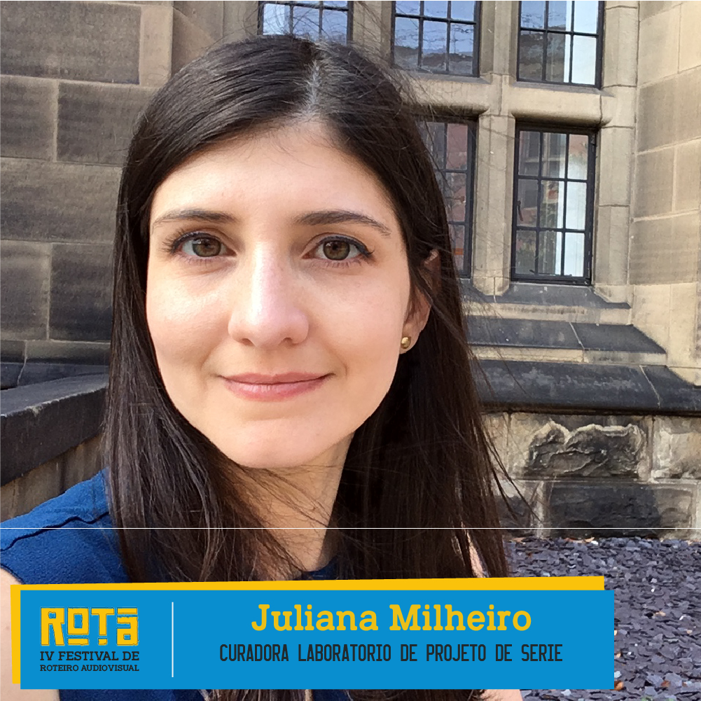 Formada em cinema e vídeo pela Universidade Federal Fluminense, com mestrado em roteiro para cinema e TV pela Screen Academy Scotland/ Edinburgh Napier University. Em 2018, foi finalista do FRAPA-Festival de Roteiro Audiovisual de Porto Alegre e semifinalista do Prêmio Cabíria de Roteiro com o roteiro de longa-metragem “Confete” e, em 2019, ganhou o prêmio de melhor longa-metragem do FRAPA com o roteiro “Macuxi”. Juliana também escreveu para séries infantis exibidas no Canal Futura e na TV Escola e fez desenvolvimento e roteiro de projetos de séries de ficção e animação contemplados por editais de desenvolvimento. Atualmente, Juliana é Coordenadora de Conteúdo do Gloob.
-
MARIA JULIA LIMIA
Curadora
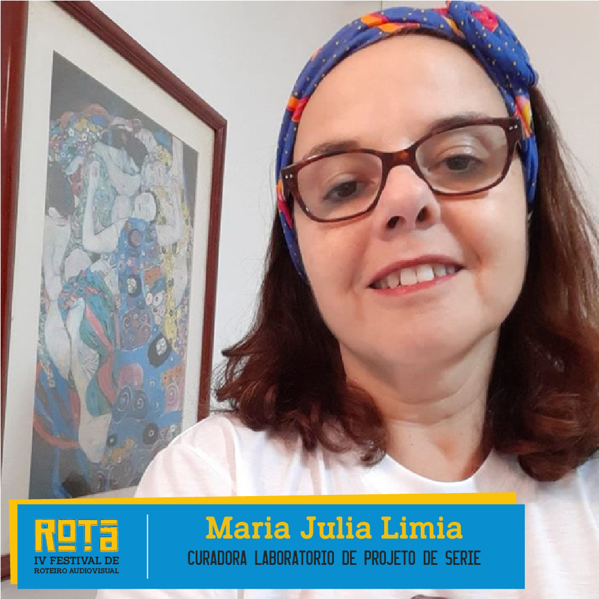 Formada em Letras e com doutorado em Literatura Comparada, com foco no teatro carioca do século XIX. Atuou como professora de Literatura Infantil no Colégio Pedro II; Literatura e Cultura Brasileira na Universidade Estácio de Sá; Teatro Brasileiro na Escola de Teatro Martins Pena. Atualmente leciona na Escola de Cinema Darci Ribeiro a disciplina de Fundamentos da Narrativa.
-
OHANA ABREU
Curadora
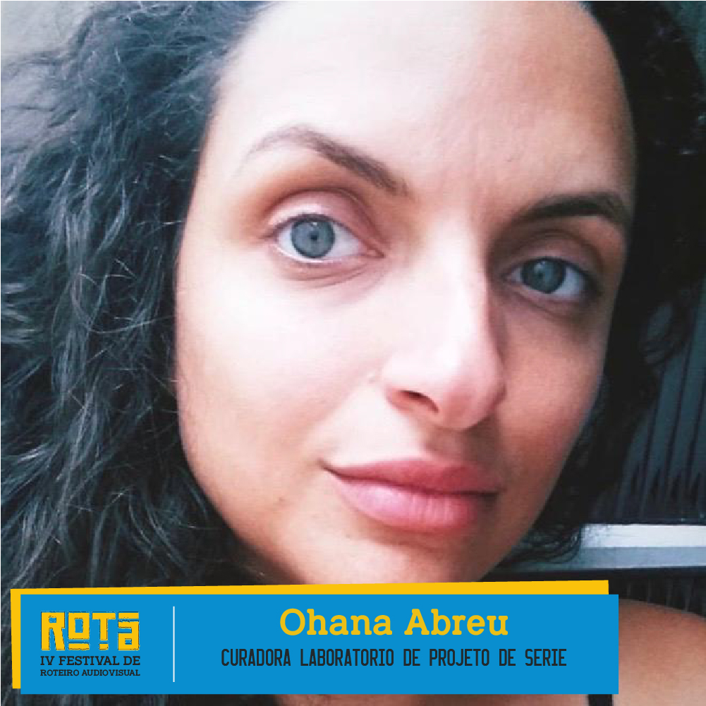 Realizadora audiovisual, produtora, roteirista e pesquisadora, co-fundou em 2011 o Coletivo Gaiolas, grupo de realizadoras que discutem sobre o espaço da mulher no audiovisual com produções que abrangem paridade de gênero, representação social, formação de público, arte e educação, produção cultural e economia criativa. Em suas obras, dialoga sobre hibridismo entre cinema e teatro. Integrou a curadoria do I e II ROTA – Festival de Roteiro Audiovisual (2017/2018).
-
PEDRO REINATO
Curador
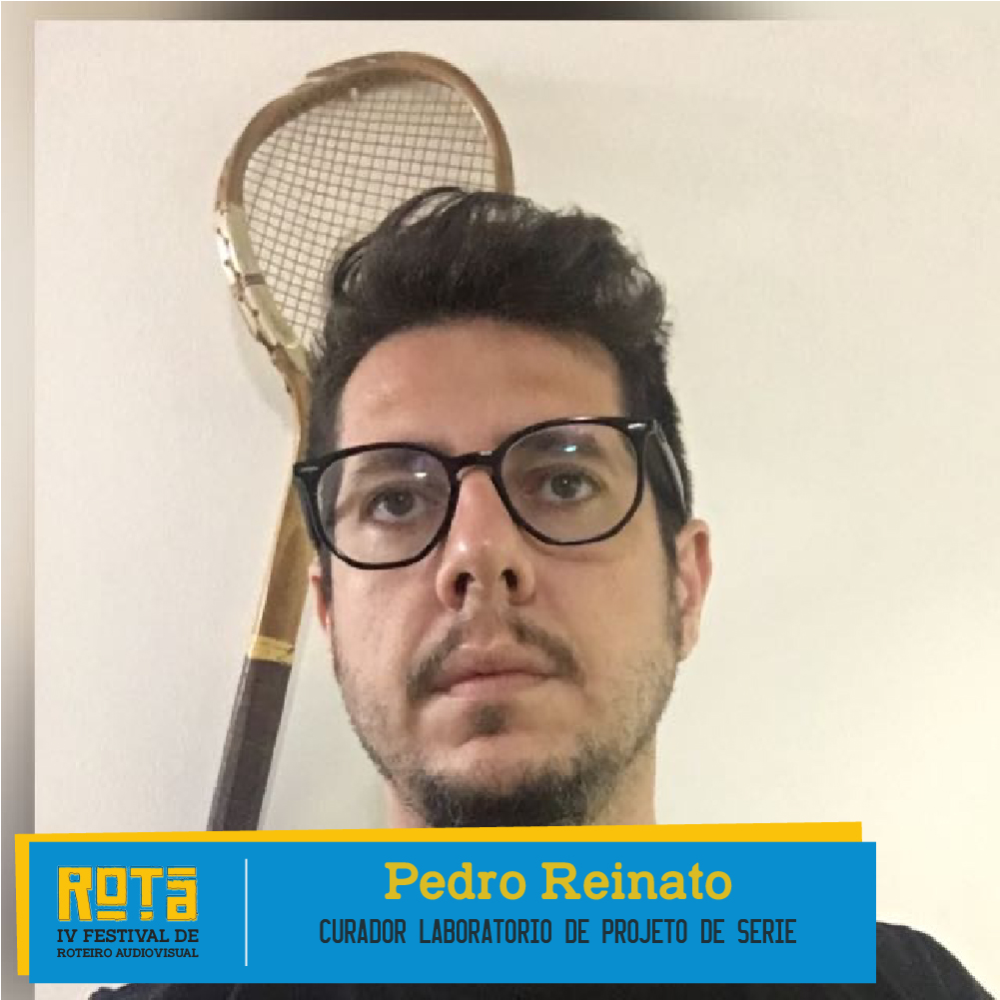 É roteirista, script-doctor e coordenador pedagógico da Roteiraria. Possui especialização em Literatura pela PUC-SP e mestrado e doutorado em Literatura Brasileira pela USP. Já criou conteúdo para diferentes plataformas dos segmentos editorial, publicitário e audiovisual. É professor da pós-graduação da FAAP no curso de Roteiro Audiovisual. Também se dedica ao desenvolvimento de roteiros para longas e séries de ficção em diferentes núcleos criativos.
-
RENATA SOFIA
Curadora
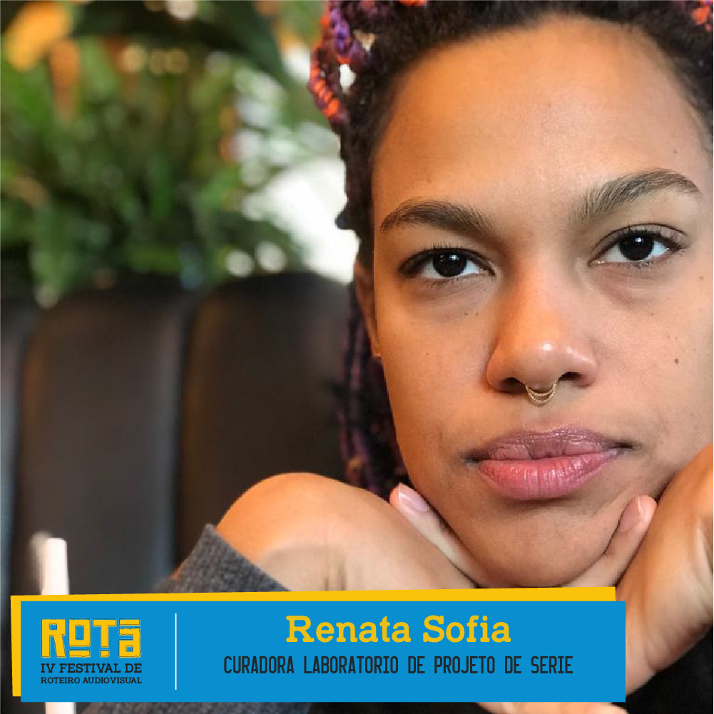 Colaboradora de projeto de dramaturgia diária em desenvolvimento da TV Globo. Autora e Roteirista do longa original "MC Estrela" em produção pela Kromaki. Roteirista colaboradora da série infantil “Detetives do Prédio Azul” (12 e 13 temporadas); das séries de ficção em desenvolvimento “Ladrão que Rouba Ladrão”, “Paixão FC”, “Sonhos Suburbanos” e “Dissonantes”; e das séries animadas “Arabela”, “Get Along Gang” e do desenvolvimento do Núcleo Criativo da 2Dlab. Jurada do Concurso de Piloto de Séries - FRAPA 2019. Participou do painel “Afrobrasilidades” com o projeto original de série infantil "O Laboratório do Porão" no Rio Content Market 2017. Selecionada para o 1º Laboratório de Narrativas Negras para o Audiovisual - Flup, Film2B e TV Globo. Formada pela UERJ em Comunicação Social, trabalhou por quatro anos na TV Globo como produtora de conteúdo web.
-
SANDRA PEREIRA
Curadora
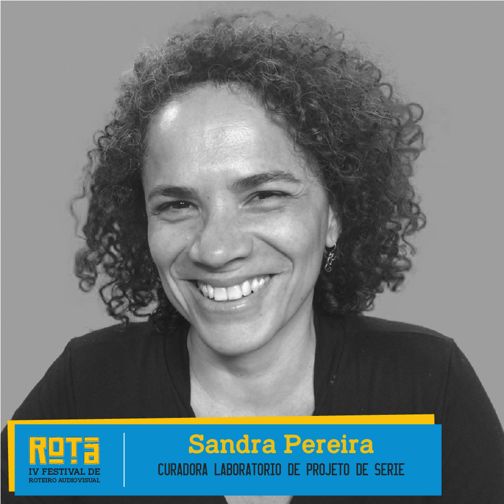 Jornalista, mestre em Mídia e Cotidiano com ênfase em Cinema Documentário pela UFF. Roteirista pela Escola de Cinema Darcy Ribeiro, assina o roteiro do longa documentário “Diga meu nome”, exibido em vários festivais no Brasil e no exterior. Foi finalista do Laboratório de Roteiristas Estreantes, da Darcy Ribeiro. Ministrou cursos e oficinas de roteiro de ficção, produção audiovisual e cinema documentário em instituições como SESC Rio, TV Brasil e Escola de Cinema Darcy Ribeiro.
-
YOYA WURSCH
Curadora
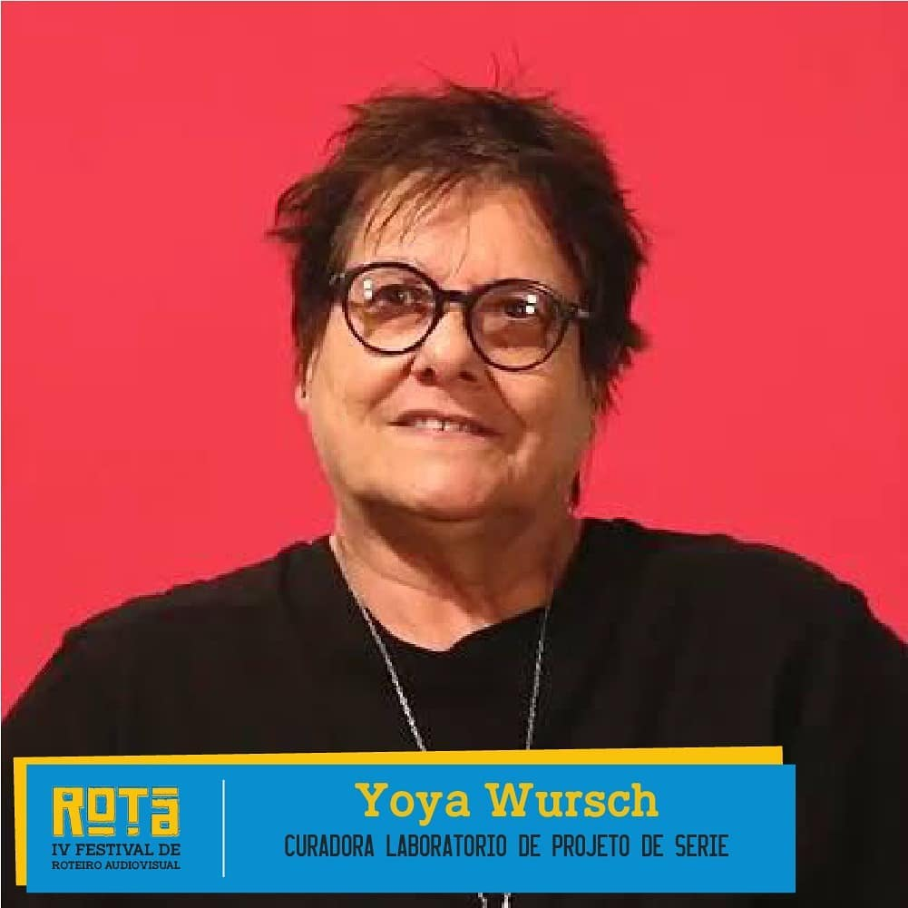 Começou no cinema com Bete Balanço, depois Rock Estrela, Rádio Pirata, Mistério no Colégio Brasil, Lua de Cristal, Sonho de Verão, Espelho D’Água, Copacabana, Minha Vida Em Suas Mãos e muitos outros. No teatro é autora de Tap Station, Nem morto, que dirigiu e escreveu com Luiz Carlos Góes, Um Toque de Hitchcock, Point, Felizes da Vida, entre outras peças encenadas com sucesso. Em televisão assinou o roteiro da série de ficção “Republica do Peru”, 2015 – 2017 (HBO) e é autora de novelas como Dona Anja, Mandacaru, Malhação, Dance Dance Dance, Vende-se Um Véu De Noiva, além dos programas Brava Gente e Você Decide que tiveram grande repercussão de público e mídia. Leciona Escritura de Curta-metragem e de Séries na Escola de Cinema Darcy Ribeiro.
-
DANI REULE
Consultora
 DANI REULE - É roteirista, atriz, jornalista, mestra em Comunicação e Informação e certificada pelo Professional Program in Writing for Television da UCLA. Escreveu a série ‘Baile de Máscaras’ (TV Cultura), o longa ‘Na Batalha’ (roteiro finalista do FRAPA 2017) e foi colaboradora do autor Marcílio Moraes na série ‘Pigmaleão do Brejo’ (Rede Record). Teve curtas de sua autoria apresentados em festivais nacionais e é criadora da sitcom 'Uma vida de Zenilde' (Tambellini Filmes). É membro da diretoria da Gedar e foi palestrante no VFX-Rio, na Semana do Audiovisual Primeiro Plano (Juiz de Fora), no Rio WebFest e no ROTA. É ainda professora na ABC Cursos de Cinema e no Instituto Infnet e ministrou cursos de roteiro na Escola de Cinema Darcy Ribeiro e na pós-graduação em Roteiro da FACHA, além de ter seu próprio curso de criação de série. Além de consultora do Lab, Dani também integra a mesa SALA DE ROTEIRO: O PROCESSO CRIATIVO.
DANI REULE - É roteirista, atriz, jornalista, mestra em Comunicação e Informação e certificada pelo Professional Program in Writing for Television da UCLA. Escreveu a série ‘Baile de Máscaras’ (TV Cultura), o longa ‘Na Batalha’ (roteiro finalista do FRAPA 2017) e foi colaboradora do autor Marcílio Moraes na série ‘Pigmaleão do Brejo’ (Rede Record). Teve curtas de sua autoria apresentados em festivais nacionais e é criadora da sitcom 'Uma vida de Zenilde' (Tambellini Filmes). É membro da diretoria da Gedar e foi palestrante no VFX-Rio, na Semana do Audiovisual Primeiro Plano (Juiz de Fora), no Rio WebFest e no ROTA. É ainda professora na ABC Cursos de Cinema e no Instituto Infnet e ministrou cursos de roteiro na Escola de Cinema Darcy Ribeiro e na pós-graduação em Roteiro da FACHA, além de ter seu próprio curso de criação de série. Além de consultora do Lab, Dani também integra a mesa SALA DE ROTEIRO: O PROCESSO CRIATIVO.
-
FIDELYS FRAGA
Consultor
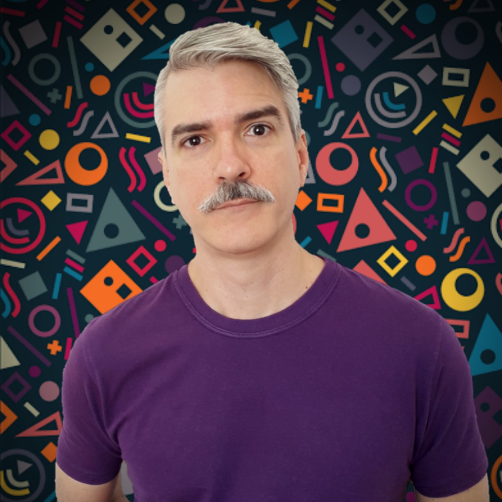 FIDELYS FRAGA - roteirista, dramaturgo e professor de roteiro, formado pela Escola de Cinema Darcy Ribeiro e licenciando pela UFF. Seus trabalhos mais recentes incluem a série doc Fronteiras Fluidas, exibida em 2020 no Canal Curta!, e as séries de ficção Arembepe, como roteirista chefe, e Baile de Máscaras, exibida em 2019 na TV Brasil, ambas para Giros Filmes. Também escreveu a série doc Roda de Choro em fase de finalização para o Canal Curta! Além de ser consultor do Lab, Fidelys integra a mesa SALA DE ROTEIRO: O PROCESSO CRIATIVO.
-
GUSTAVO MORAES
Consultor
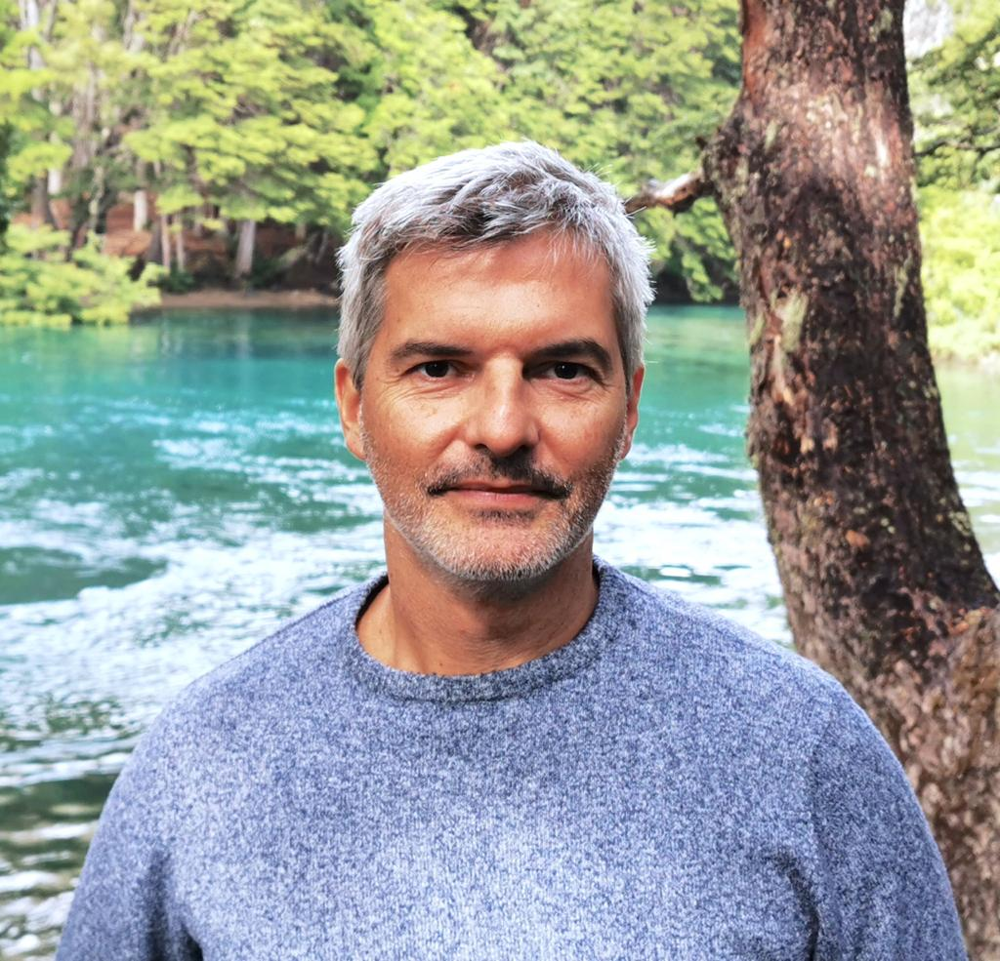 GUSTAVO MORAES - Mestre pela Columbia University nas áreas de produção e direção audiovisual. Como roteirista, participou dos laboratórios Binger Film Lab (Holanda), Produire au Sud-Festival 3 Continents (França) e do Laboratório SESC de Roteiros (Brasil). Moraes realiza filmes, documentários e publicidade. Leciona há mais de 10 anos nas áreas de roteiro, produção e direção. Atua também como consultor de roteiros e projetos audiovisuais. Foi consultor do longa-metragem Paraíso Perdido, de Monique Gardenberg, (2018) e roteirista do documentário Moda Sem Medida, de Vanessa Araújo para o Canal Fashion TV. Moraes integra a mesa SALA DE ROTEIRO: O PROCESSO CRIATIVO, além de ser consultor do Lab.
-
MONICA SOLON
Consultora
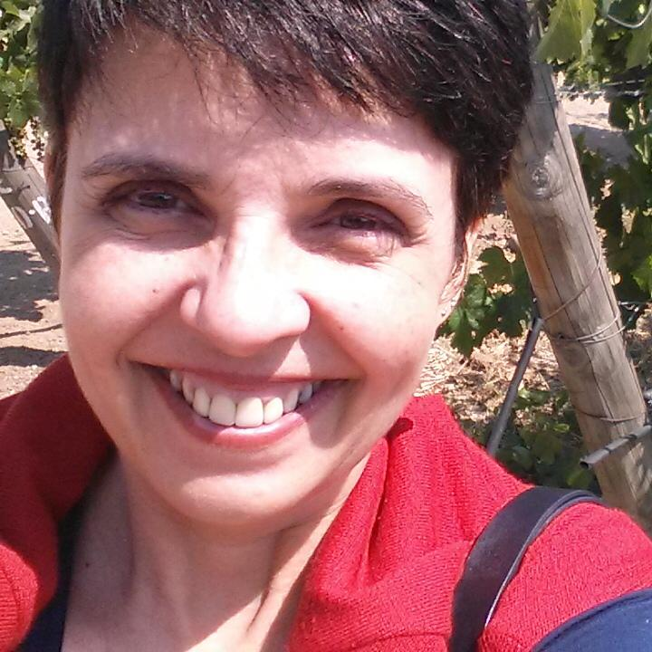 MONICA SOLON - É roteirista e escritora. Leciona o Roteiro Adaptado na Escola de Cinema Darcy Ribeiro e em cursos livres. Fez mestrado em Creative & Critical Writing com especialização em escrita, análise e desenvolvimento de roteiro na Inglaterra. É co-roteirista, com Steve Hawes, na adaptação para o cinema do romance A Girl Made of Dust, de Nathalie Abi-Ezzi, a ser dirigido por Hiam Abbass (2019/20). Participou da sala de roteiristas da série Baile de Máscaras (Produtora Giros), em exibição na TV Cultura. Desenvolveu e é roteirista nas séries Seeing in the Darkness e Youngsters, a serem produzidas pela produtora Talents Content (EUA). Sua proposta de adaptação para as telas do romance A Capitoa, de Bernadette Lyra, foi selecionado para o Cine Libri Workshop, com Linda Seger, a ser realizado na Bulgária, em outubro. Website: www.monicasolon.com. Monica integra a mesa SALA DE ROTEIRO: O PROCESSO CRIATIVO, além de ser consultora do Lab.
-
JOSÉ CARVALHO
Jurado De Pitching
JOSÉ CARVALHO (Roteiraria); @roteiraria - roteirista, mestre em Literatura, com formação em análise de roteiro pela Writer’s Boot Camp, nos Estados Unidos, e sócio-fundador da Roteiraria. Três vezes premiado no Grande Prêmio de Cinema Brasil (maior premiação do mercado audiovisual brasileiro), nas categorias roteiro original e roteiro adaptado, José Carvalho é creditado em 16 longas-metragens. Walter Salles, Wagner Moura, Daniela Thomas, Cacá Diegues, Cao Hamburguer, Renê Sampaio e Paulo Morelli são alguns dos cineastas com os quais já trabalhou, alternando-se entre escrita e análise narrativa. Em TV, escreveu sucessos como a telenovela Xica da Silva (TV Manchete; Telemundo), o humorístico Sai de Baixo (TV Globo), o interativo Você Decide (TV Globo) e o procedural Carga Pesada (TV Globo). À frente da escola e hub de conteúdos Roteiraria, José Carvalho e equipe têm trabalhado tanto com roteiristas consagrados, como revelado novos talentos para o mercado audiovisual brasileiro.
-
LAÍS MENDES PIMENTEL
Jurada De Pitching
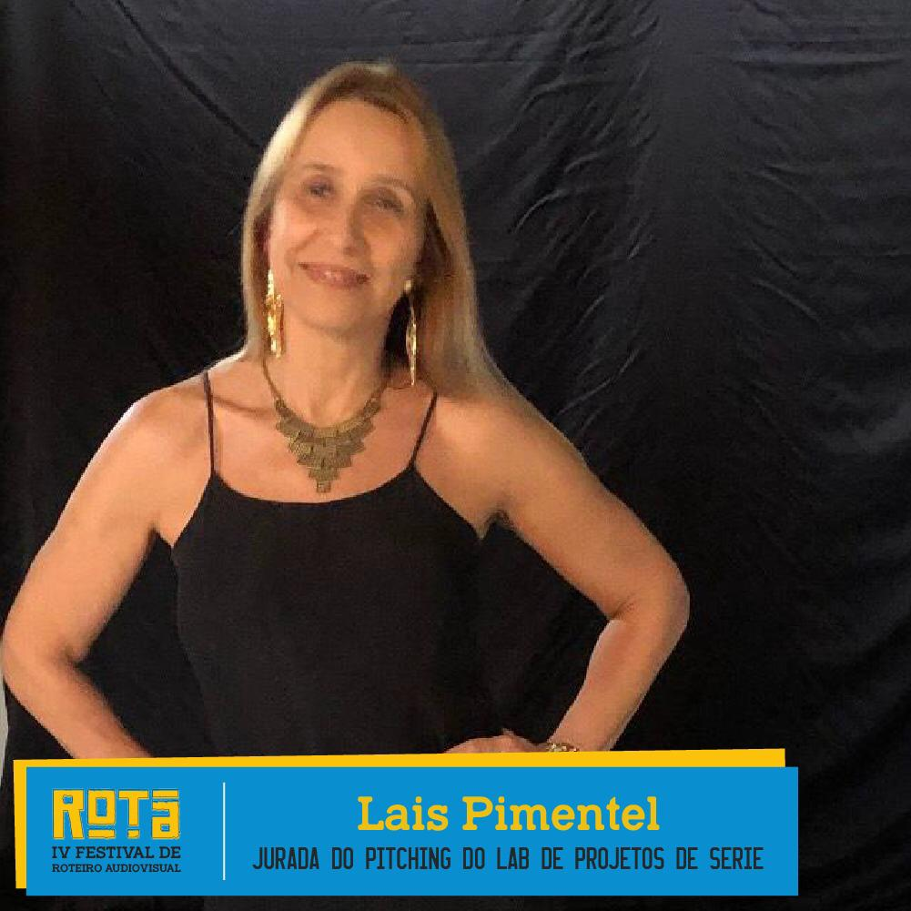 Formada em jornalismo pela PUC/RJ, trabalhou em empresas como TV Globo, TV Manchete e BBC em Londres. Autora-roteirista da TV Globo há 12 anos, desde então estuda dramaturgia. Colaborou em programas de variedades, reality show e projetos de minisséries e quadros envolvendo jornalismo e entretenimento. Na teledramaturgia, escreveu para duas novelas: Cheias de Charme e Geração Brasil. Paralelamente, oferece os serviços de script doctoring e desde 2014 dá palestras e oficinas de roteiro de séries e novelas. Durante a pandemia, descobriu o prazer de ser protagonista em lives e coadjuvante de mesas-redondas remotas. Ainda durante o isolamento social, inaugura nova ocupação: a de ghost writer. Essa será a terceira participação como júri no ROTA.
-
MARCOS PIERI
Jurado De Pitching
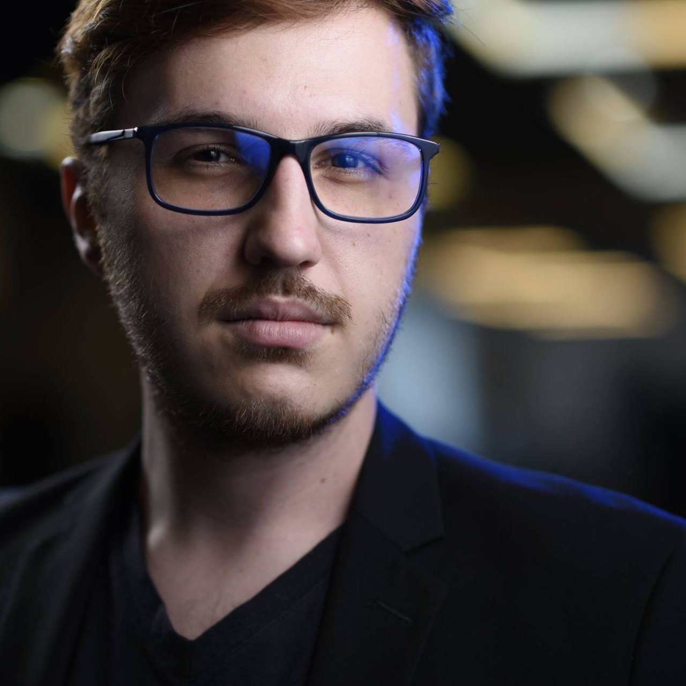 MARCOS PIERI (Raccord); @raccordproducoes - Formado em Cinema e em Publicidade pela PUC-Rio, Marcos iniciou sua carreira na produção de curtas dentro da própria faculdade e fora dela. Desde 2014 integra o grupo da Raccord Produções, onde participa ativamente na produção dos projetos da casa, acompanhando sua execução desde a ideia inicial até toda sua cauda longa. A exemplo estão os longas Madalena (2021 | Madiano Marcheti); Cedo Demais (2021 | José Lavigne); Pluft (2021 | Rosane Svartman); Missão Cupido (2020 | Rodrigo Bittencourt); Correndo Atrás (2020 | Jeferson De); Angel Vianna: voando com os Pés no Chão (2018 | Cristina Leal); e Os Maias (2014 | João Botelho). Além das séries A Dona da Banca (2021 | Marton Olympio e Hsu Chien), As Canções da Minha Vida (2017| Bruno Levinson) e Série C (2017 | Samir Abujamra).
-
RAPHAEL BULCÃO PEREZ
Jurado De Pitching
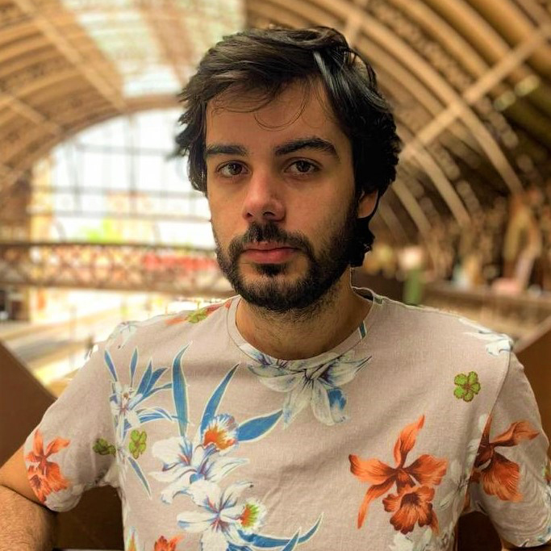 Produtor de conteúdo da NBCUniversal Brasil. Responsável pelos projetos de ficção e reality shows originais dos canais Universal TV, Studio Universal e SY-FY desde o desenvolvimento dos roteiros à produção, edição, análise de performance. Passou pelos cursos de Jornalismo na UERJ; Cinema na UFPE, e Teatro na UNIRIO até se fixar em Rádio e TV na UFRJ, onde pesquisou a relação entre o cinema brasileiro e as artes visuais. Hoje, investiga as diferentes relações entre teatro e cinema - com foco em dramaturgia teatral e roteiros audiovisuais.
Regulamento
1. OBJETIVO
1.1 O Laboratório de Projetos de Série do V ROTA - Festival de Roteiro Audiovisual tem o objetivo de valorizar, qualificar e premiar bons Projetos de Séries de ficção escritos por estudantes e iniciantes, contribuindo com seu desenvolvimento e abrindo portas para sua realização.
1.1.1 Aceita-se a participação de estudantes e iniciantes maiores de idade desde que:
A. não tenha mais do que 3 (três) roteiros de curtas filmados e exibidos em festival ou mostra de cinema presencial ou on line, TV, web ou plataforma de streaming;
B. não tenha nenhum roteiro de longa de ficção já exibido em festival, em mostra de cinema presencial ou on line, TV, web ou plataforma de streaming;
C. não tenha participado em mais de 2 (duas) salas de roteiro como roteirista assistente em série de ficção já exibida na TV, web ou plataforma de streaming;
D. não tenha participado de nenhuma sala de roteiro como roteirista criador (a) de série de ficção já exibida na TV, web ou plataforma de streaming,
1.1.2 A não participação nos itens acima mencionados deverá ser atestada através do Termo de Responsabilidade preenchido, assinado e anexado pelo concorrente no ato da inscrição.
1.2 O Laboratório compreende consultorias com 4 profissionais reconhecidos distribuídos em dois dias e um Pitching final para um Júri convidado pelo Festival, em um terceiro dia. Tanto as consultorias quanto o Pitching serão sobre o Projeto de Série inscrito na presente seleção.
2. DATA E LOCAL
2.1 As consultorias do Laboratório acontecerão de 16 e 17 de março de 2021. O Pitching do Laboratório acontecerá no dia 21 de março de 2021.
2.2 Tanto as Consultorias quanto o Pitching do Laboratório acontecerão on line através da Ferramenta de vídeo conferência Zoom Meeting.
2.3 É imprescindível que os selecionados para o Laboratório tenham disponibilidade para estar presentes virtualmente nos dias 16, 17 e 21 de março de 2021. Caso o selecionado não possa comparecer em qualquer um dos dias, tanto das Consultorias quanto do Pitching, deve avisar à organização do Festival com antecedência e será substituído por um suplente.
3. INSCRIÇÃO
3.1 A inscrição estará aberta a partir das 00h00 do dia 20 de janeiro até as 23h59 do dia 03 de fevereiro de 2021.
3.2 Não há limite de inscrição avulsa de Projetos por autor.
3.3 Estão habilitados a se inscrever roteiristas estudantes e iniciantes brasileiros ou naturalizados, residentes ou não no Brasil, maiores de 18 anos.
3.4 O V ROTA aceita inscrições de projetos escritos em outras línguas que não o português, desde que estejam inteiramente traduzidos para o português a fim de que possam ser avaliados.
3.5 Para cada Projeto será contabilizada uma nova inscrição.
3.6 A inscrição neste Laboratório dar-se-á através do seguinte processo:
3.7.1 Preencher o Formulário de Inscrição do Laboratório por completo. Cada um dos itens encontra-se esmiuçado a seguir:
* Título (até 100 caracteres com espaço)
* Gênero:
* Logline:
* Número de episódios (por temporada):
* Tipo ou formato marque um x na(s) opção(ões):
|
|
Serializado |
|
|
Procedural |
|
|
Stand alone |
|
|
Arco aberto |
|
|
Arco fechado |
|
|
Multitrama |
|
|
Antologia |
|
|
Minissérie |
|
|
Outro (s) |
* Conceito da série (até 2.000 caracteres com espaço):
Descreva a ideia central, a força motriz da série (que a fará se sustentar por diversas temporadas). Descreva ainda como a história se desenvolverá em sua linha central. Fale um pouco também da estrutura da série e seus dispositivos narrativos.
* Arco da/o protagonista: (até 1.000 caracteres com espaço):
Descreva quem é, o que quer e como será a jornada do protagonista ao longo da série (no caso de série com arco do protagonista).
* Universo (até 1.500 caracteres com espaço):
Descreva a configuração do espaço ficcional construído (especificidades do recorte de mundo, diegese, época em que se passa, etc.)
* Personagens principais (até 2.500 caracteres com espaço):
Descreva nome, idade e personalidade (qualidades, defeitos, conflitos, carências, visão de mundo, etc.) dos personagens principais da série.
* Arco da Temporada 1 (até 3.000 caracteres com espaço):
Descreva como a história irá se desenrolar, apresentando os principais conflitos, viradas e gancho para a segunda temporada (se houver). No caso de séries de episódios independentes, apresente os enredos dos diferentes episódios e explique como eles dialogam para construir o conjunto da série.
* Temporadas futuras (até 2.000 caracteres com espaço):
Indique os caminhos que a série irá tomar nas temporadas futuras. No caso de antologia, ou formatos que compreendam episódios independentes, faça uma pequena sinopse das temporadas seguintes.
*Preenchimento obrigatório. O formulário incompleto não permite a conclusão da inscrição.
3.7.2 Anexar ao Formulário os seguintes documentos:
a) Sinopse do piloto (formatação: fonte Arial, tamanho 11; espaçamento entre as linhas: 1,5; margens: normal - superior e inferior: 2,5 cm / esq e direita: 3 cm; número de páginas: até 5; arquivo PDF);
b) Documento com foto frente e verso (RG ou Carteira de Motorista ou Passaporte) para a devida identificação e comprovação da maioridade do candidato. Este documento deve ser anexado anteriormente, ao realizar o cadastro no site;
c) Termo de Responsabilidade (conforme modelo aqui) datado e assinado pelo mesmo;
d) Currículo do/a(s) roteirista(s);
e) Comprovante ou protocolo de Registro na Biblioteca Nacional (opcional).
f) Documento que comprove a liberação dos direitos, em caso de adaptação de obra de outro autor.
g) Carta de autorização do(s) coautor(es) (conforme modelo aqui), datada e assinada pelo(s) mesmo(s), caso se aplique.
3.8 Documentação incompleta, fora do padrão solicitado e/ou enviada após o encerramento do prazo de inscrições desclassifica a inscrição.
3.9 A organização do V ROTA se reserva o direito de prorrogar o prazo de inscrições, conforme julgue adequado, anunciando tal informação em seus canais de comunicação.
3.10 A organização do V ROTA não se responsabiliza por quaisquer despesas referentes à participação de roteiristas neste Laboratório.
3.11 A organização do V ROTA não se responsabiliza pelas conseqüências de quaisquer informações inverídicas que venham a ser apresentadas por roteiristas participantes deste Laboratório, reservando-se a prerrogativa de desclassificar, a qualquer momento, os responsáveis por quaisquer infrações do presente Regulamento.
3.12 Ao inscrever seu(s) Projeto(s), o roteirista afirma anuência e concordância com os termos constantes deste Regulamento, afirmando ainda que todas as informações fornecidas à organização do V ROTA por ocasião dessa inscrição são verdadeiras.
4. PROCESSO SELETIVO
4.1 Habilitação: nesta etapa serão verificadas se todas as informações e documentos obrigatórios foram enviados. Se estiver habilitado, o inscrito receberá um e-mail confirmando a habilitação após o final do período de inscrições.
4.1.1 Apenas os Projetos habilitados passarão para a etapa de Seleção e serão avaliados.
4.2 Seleção: realizada em duas etapas. Na primeira etapa uma Comissão de Curadores irá eleger 20 (vinte) Projetos Semifinalistas. Na segunda etapa, outra Comissão de Curadores elegerá os 10 (dez) Projetos Finalistas que receberão as consultorias e apresentarão o Pitching final para o Júri.
4.2.1 A Curadoria e o Júri serão compostos por profissionais atuantes no mercado audiovisual, escolhidos pela organização do V ROTA.
4.3 Os Projetos Semifinalistas e os Finalistas serão divulgados no site e nas páginas nas redes sociais do V ROTA (Facebook, Instagram e Twitter), conforme cronograma abaixo:
· Dia 23 de fevereiro de 2021 – Semifinalistas,
· Dia 11 de março de 2021 – Finalistas,
· Dia 21 de março de 2021 – Vencedores do Pitching (anunciado na Cerimônia de Premiação do V ROTA)
. Dia 22 de março - publicação do resultado final no site e nas redes sociais
4.4 A escolha dos Projetos Vencedores do Laboratório do V ROTA, bem como dos Finalistas e Semifinalistas, será de exclusiva responsabilidade da Curadoria e do Júri do Laboratório. Estas decisões serão soberanas e irrecorríveis.
4.5 A organização do V ROTA reserva-se o direito de selecionar e premiar, ou não, quaisquer Projetos, conservando para si todas as prerrogativas referentes a esse processo de seleção, inclusive a de não premiar ou selecionar os Projetos para quaisquer prêmios.
5. CRITÉRIOS DE AVALIAÇÃO
5.1 Critérios de avaliação dos roteiros:
· Clareza do projeto - 2,5 pontos
· Originalidade/inventividade - 2,5 pontos
· Domínio do universo - 2,5 pontos
· Construção de personagens - 2,5 pontos
· Relevância/atualidade - ponto extra
IMPORTANTE: qualquer Projeto que apresente conteúdo com preconceito ou que incite à violência estará sujeito à imediata desclassificação.
6. PREMIAÇÃO
6.1 Os 10 (dez) roteiros Finalistas concorrerão aos seguintes prêmios:
- Melhor Pitching do Júri Oficial - troféu e o valor de R$1.000,00 (mil reais) sujeito à retenção de impostos
- Segundo Melhor Pitching do Júri Oficial - troféu
- Terceiro Melhor Pitching do Júri Oficial - troféu
- Melhor Pitching do Júri Popular - troféu
6.2 Outras premiações paralelas poderão ser criadas e serão divulgadas através do site e das páginas do V ROTA no Facebook, Instagram e Twitter.
7. CONTRAPARTIDA
7.1 Como contrapartida é exigida a inclusão da logomarca do V ROTA nos créditos de abertura e menção ao ROTA no encerramento da série que venha a ser produzida a partir de um roteiro premiado, assim como a inserção da mesma logomarca nas edições impressas de roteiros premiados que venham a ser publicados, comercialmente ou não.
8. CONTATOS
8.1 Dúvidas decorrentes do presente regulamento deverão ser encaminhadas ao e-mail: rotalab2021@gmail.com
8.2 Para acompanhar as notícias do V ROTA acesse:
Facebook: https://www.facebook.com/rotafestival/
Site: http://rotafestival.com
Instagram: @rotafestival
Twitter: @rotafestival